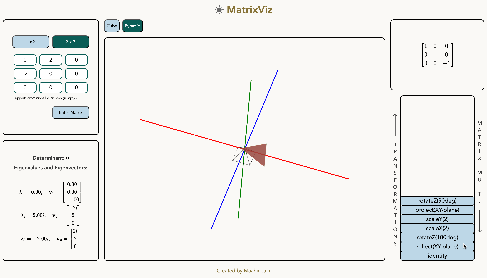

Featured Project
Featured
MatrixViz


MatrixViz
A linear algebra tool that identifies linear transformations associated with any 3 x 3 or 2 x 2 matrix, and creates an interactive animation displaying the transformations.
Features
- Computes a series of linear transformations associated with the input matrix from rotations, scaling, reflections, shears, and projections
- Generates and displays an animation showing each linear transformation applied on the starting shape until the final effect of the matrix on the shape is seen
- Includes controls for the speed of the animation and to pause and play the ongoing animation
- Includes animations for 4 shapes - cube, pyramid, square and triangle
- Allows interactivity with the 3D graph to change the view of the animation
- Displays the matrix associated with each linear transform
- Accepts 2 x 2 and 3 x 3 matrices with support for math expression inputs such as sin(45deg) and sqrt(2)/2
- Displays the determinant, eigenvalues and corresponding eigenvectors of the input matrix, using MathJax
- Has both dark mode and light mode options
- Shows an outline of the initial shape showing a visual comparison between the starting and end result
- Implements form validation checks to ensure an input matrix is valid
- Stores 3D transform data across various interactions
- Responsive to various devices
Documentation
You can access TypeDoc documentation for the project here.
Behind the Scenes
You can find a sketch of how the linear transformations associated with the input matrix are computed here.